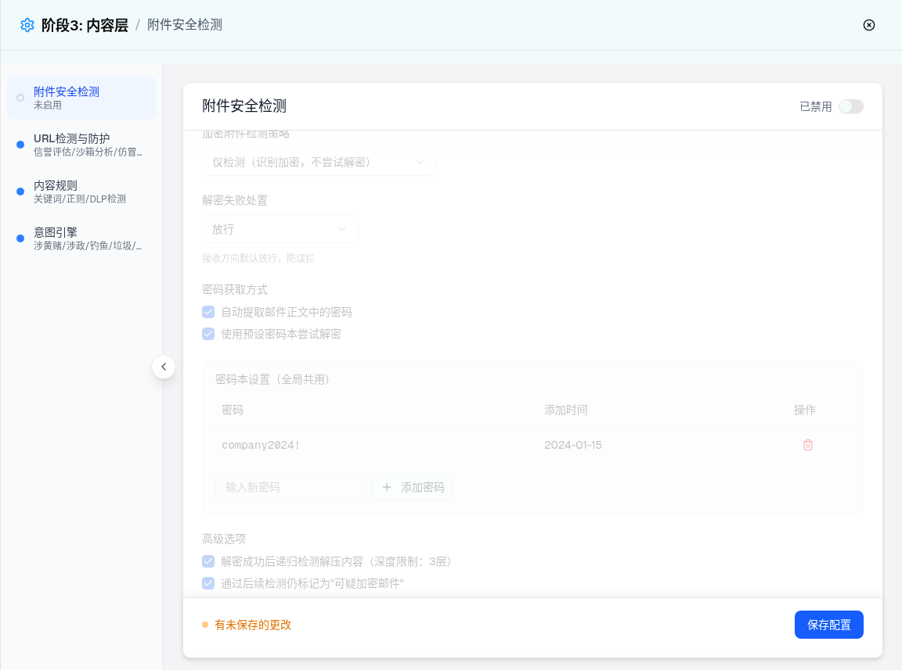
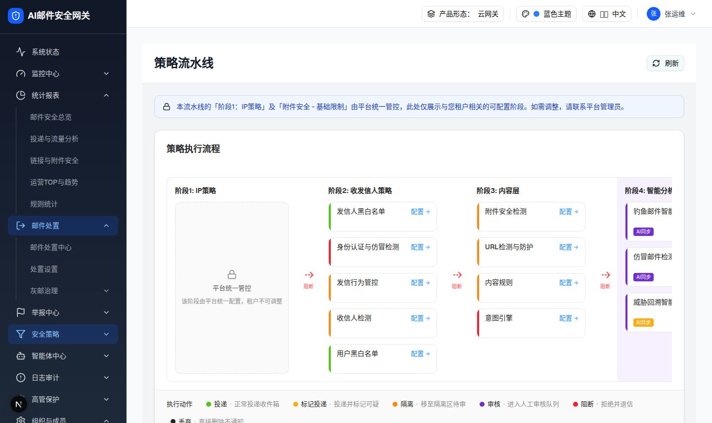
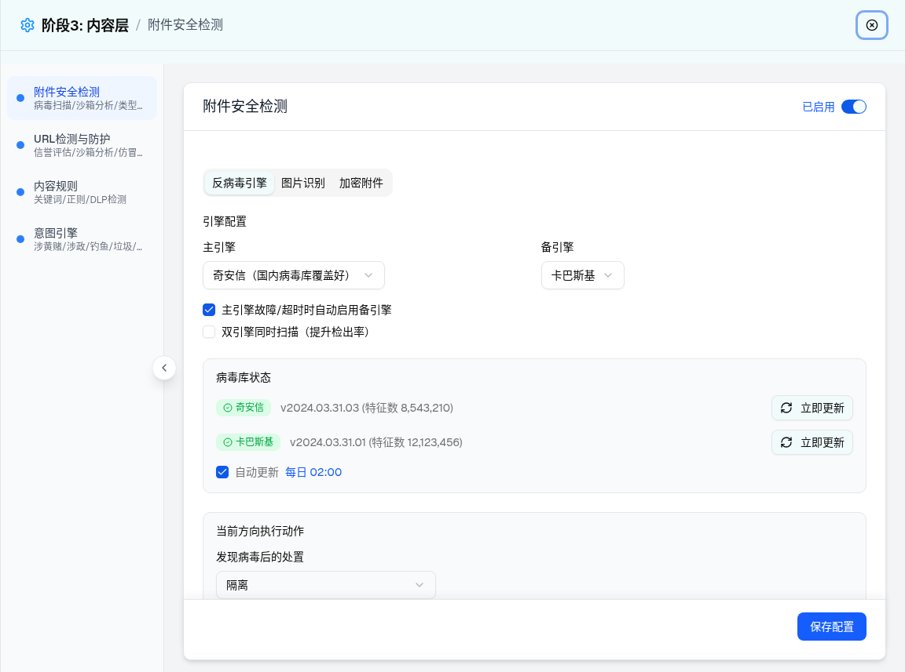
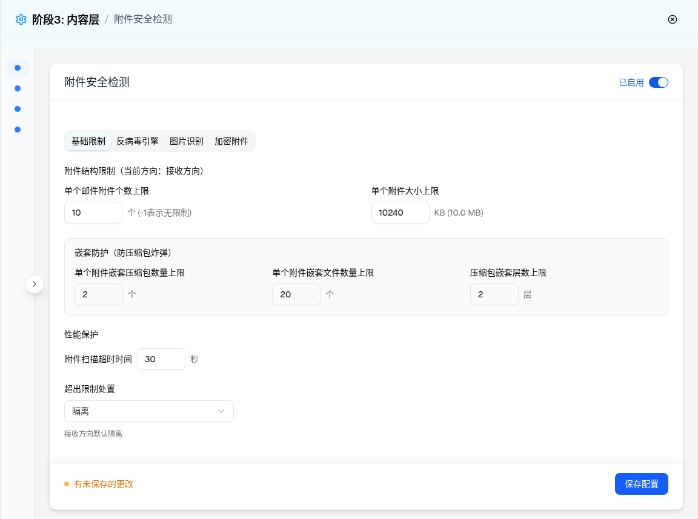
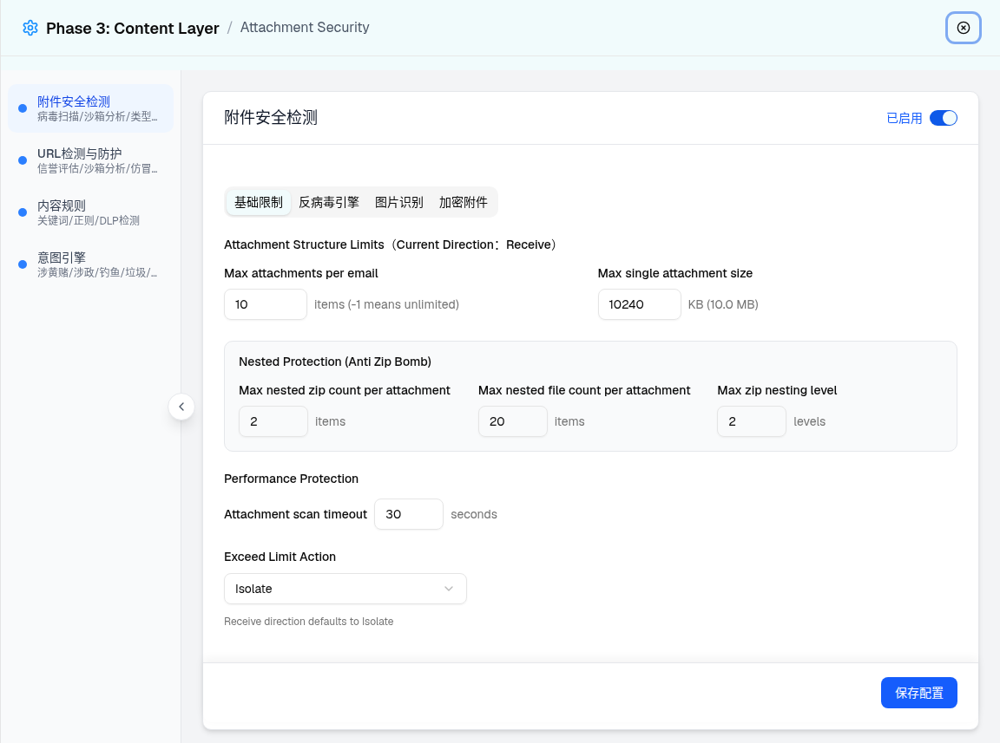

| 所属组件 | 2.3 附件安全检测配置 Tab 组（状态变体合集） |
| 主文件 | index.html |
| 触发路径 | 5A 卡头 Switch 关闭；5B URL 参数 ?viewer=tenant（多租户形态）；5C 抽屉左导航折叠按钮；5D 顶栏语言切换器选 English |
| 浏览器实测 | 5A：switch data-state=unchecked、卡头「已禁用」、配置区 opacity-50+pointer-events-none、左导航摘要「未启用」。5B：Tab 仅 3 个（反病毒引擎 active）、流水线页蓝色 Lock Alert。5C：导航 w-52→w-14。5D：卡片/表单标签英文、宿主与加密附件 Tab 仍中文。 |
（配置表单整体 opacity: 0.5 + pointer-events: none，所有控件不可交互）

| 要素 | 启用态 | 禁用态（实测） |
|---|---|---|
| 卡头文案/开关 | 「已启用」蓝字 + Switch checked | 「已禁用」灰字 + Switch unchecked |
| 配置区 | 正常交互 | opacity-50 pointer-events-none（PRD §3 一致） |
| 左导航 | 蓝色实心圆点 + 摘要「病毒扫描/沙箱分析/类型检测」 | 空心灰圆点 + 摘要「未启用」 |
| 未保存提示 | - | 切换即出现「有未保存的更改」，点击保存配置清除 |
| 业务含义 | - | PRD §5 联动：总开关禁用 → 所有子模块不生效，邮件跳过附件检测 |
「基础限制」Tab 不渲染（hideBasicLimit = isMultiTenant && viewer === "tenant"），初始选中 Tab 变为「反病毒引擎」。




| 比对项 | demo 实际 DOM | 提取的 HTML 预览 | 是否一致 |
|---|---|---|---|
| 禁用态开关 | button[role=switch] data-state=unchecked，卡头文本「已禁用」 | aria-checked=false + 文案联动 | 一致 |
| 禁用遮罩 | 存在 div.opacity-50.pointer-events-none 包裹 Tabs | .disable-mask.off 同效果 | 一致 |
| 租户视角 Alert | [role=alert] 文案「本流水线的「阶段1：IP策略」及「附件安全 - 基础限制」由平台统一管控…」 | 同文案 | 一致 |
| 租户视角 Tab 数 | 3 个 tab：[反病毒引擎(active), 图片识别, 加密附件]；「基础限制」未渲染（条件节点） | 3 个 tab 同顺序同选中态 | 一致 |
| 折叠导航 | 容器 class 含 w-14（由 w-52 切换） | 以截图呈现（预览未复刻折叠动画） | 一致（截图证据） |
| 英文模式混排 | 面包屑/表单标签英文，tablist 与左导航中文 | 以截图+差异表记录 | 一致 |